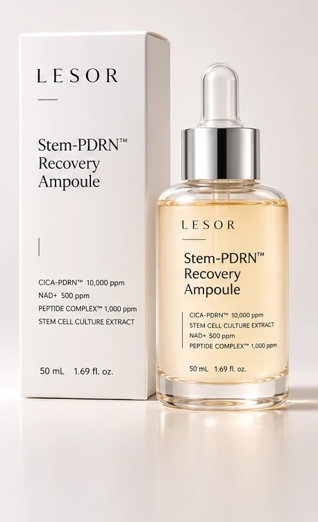

01
Calm First
먼저, 편안하게
예민한 날에도 손이 가는 순한 사용감
 LESOR / THE FOUNDATION AMPOULE
LESOR / THE FOUNDATION AMPOULE지치고 건조하게 느껴지는 날, 피부의 기초를 다시 세우는 데일리 앰플. 맑은 골드빛 텍스처가 예민한 날에도 편안하게 스며들어, 촉촉하고 탄탄해 보이는 피부 바탕을 가꿉니다.
엄격한 품질 관리를 거친 100% 정품만을 제공하며
공식 채널을 통해서만 전담 케어 서비스를 받으실 수 있습니다.
비공식 경로를 통한 제품은 성분 변질 및 A/S 불가 등의 문제가 발생할 수 있으니
반드시 공식 인증 여부를 확인해 주세요.
덮는 화장품이 아니라, 세우는 기초.
르소르는 피부가 먼저 편안해져야 그다음이 의미 있다고 믿습니다.
무언가를 더 얹기 전에, 바탕부터. 먼저 촉촉하고 편안하게 정돈한 뒤 그 위에 매끄러운 결을 올리는 순서를 한 병에 담았습니다. 과하지 않게, 그러나 확실하게.

예민한 날에도 손이 가는 순한 사용감
속부터 차오르는 듯 오래 머무는 수분감
매끄럽고 탄탄해 보이는 피부결
촉촉하고 편안한 피부 컨디션 케어
건강해 보이는 피부 컨디션을 위한 성분
매끄럽고 탄탄해 보이는 피부결 케어
제품 콘셉트의 핵심 원료
※ 위 내용은 원료의 특성에 한한 설명이며, 제품의 효능·효과와는 무관합니다.
세안 후 토너로 피부결을 정돈합니다.
적당량을 덜어 얼굴 전체에 부드럽게 펴 발라 주세요.
필요에 따라 크림을 덧발라 마무리합니다.

| 제품명 | 르소르 스템-PDRN 리커버리 앰플 |
|---|---|
| 내용물의 용량 | 50 mL |
| 제품 주요 사양 | 모든 피부용 |
| 사용기한 또는 개봉 후 사용기간 | 기재 예정 |
| 사용방법 | 세안 후 토너로 피부결을 정돈한 뒤, 적당량을 덜어 얼굴 전체에 부드럽게 펴 바릅니다. |
| 화장품제조업자 | 기재 예정 |
| 화장품책임판매업자 | 기재 예정 |
| 제조국 | 기재 예정 |
| 전성분 | 기재 예정 화장품법에 따라 기재해야 하는 모든 성분을 출시 전 표기합니다. |
| 기능성 화장품 여부 | 기재 예정 식약처 심사·보고 여부에 따라 표기합니다. |
| 사용할 때의 주의사항 | 1) 화장품 사용 시 또는 사용 후 직사광선에 의하여 사용 부위가 붉은 반점, 부어오름 또는 가려움증 등의 이상 증상이나 부작용이 있는 경우 전문의 등과 상담할 것 2) 상처가 있는 부위 등에는 사용을 자제할 것 3) 보관 및 취급 시의 주의사항: 어린이의 손이 닿지 않는 곳에 보관할 것, 직사광선을 피해서 보관할 것 |
| 품질보증기준 | 본 제품에 이상이 있을 경우 공정거래위원회 고시 소비자분쟁해결기준에 의거하여 교환 또는 보상받을 수 있습니다. |
| 소비자상담 전화번호 | 기재 예정 |
아직 등록된 구매평이 없습니다.
정식 판매 오픈 후 구매하신 고객님만 작성하실 수 있습니다.등록된 문의가 없습니다.
제품에 대해 궁금한 점을 남겨 주시면 확인 후 답변드립니다.